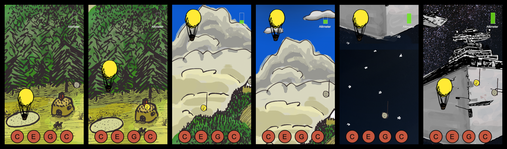

An explorable world motivated users to continue training in the gamified prototype. This was one layer of motivation among many.
Screens to track player progress, compete with friends via social media, and award badges for accomplishments.
Gameplay in the original is nice to look at but actually quite confusing for players. Within thirty seconds, many said "I'm bad at this," losing confidence as musicians just because of weak UX.